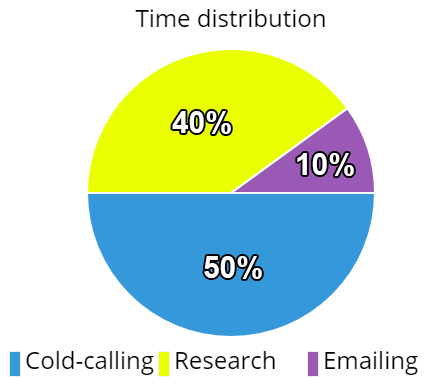

Bohdan khlimonenko
Date of birth: 22 February 1995
https://www.facebook.com/bahliverpool
https://www.linkedin.com/in/bohdan-khlimonenko
+380688309073
khlimonenko22@gmail.com
bohdan600
Education: B.A. in Journalism, Institute of International Relations (National Aviation University), 2012-2016
Objective: Getting position of Sales Manager in IT
Required income (given the quota is met): $1040-1260
Why entrust growth of revenue to me:
- Never tolerate mediocrity in myself
- Speak English nearly as well as the Americans do
- Treat Sales as “To get everything you want, help enough people get what they want” (C) Zig Ziglar
- Obsessed with self- and other forms of education in IT and Sales
Key competencies:
- Prospecting & Conducting demo-calls
- Negotiating & Public speaking (Completed training program by “Sagittarius” center, June-July 2016)
- Extensive experience in prospecting on LinkedIn/Sales Navigator
- Solid knowledge of Google Analytics. Certificate
- Basic knowledge of HTML5 & CSS3
- Full working proficiency in English, Russian and Ukrainian
Recent employment

.IO Analytics, B2B Lead Generator (International)
.IO Analytics, B2B Lead Generator (International)
August 2016 – present time
- Top performance across pre-sales department (December-February)
- Consistent meeting of the quota (1 lead/day)
- Developed a department-wide used calling script
- Notable leads: Vice Media USA, Newsmax Media, La Stampa, Network18, Kompas.com, CNN Turkey
Accomplishments:
Superbinary, B2C sales manager (CIS, cald-calling)
June-August 2016
- Avg. monthly sales: $1000+
- Multiple top scores in post-call analysis
Accomplishments:
«Forbes. Ukraine», correspondent
February 2014 – June 2016
- Lead author of “Investments” section
- Constant practice of spoken and written English
- Extensive experience in communication with C-level executives
- Learnt to ask right questions, express thoughts catchingly and find meaningful data
Sales-related accomplishments:
Archive of publications - http://forbes.net.ua/author/33261
- Neat, physically fit, nonsmoking
- Hobbies: long-distance running (marathon time: 4:25:39, 9.10.2016), study of history and economics.
- In addition to work, read and listen to English 10+ hours a week (most influenced by J. Blount’s “Fanatical Prospecting”, C. Voss’ “Never split the difference”, R. Cialdini’s “Influence”)